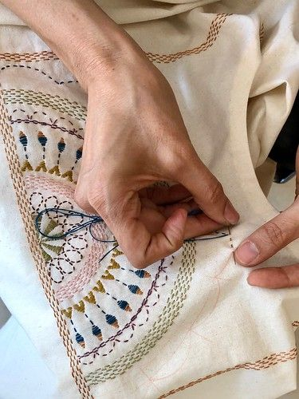
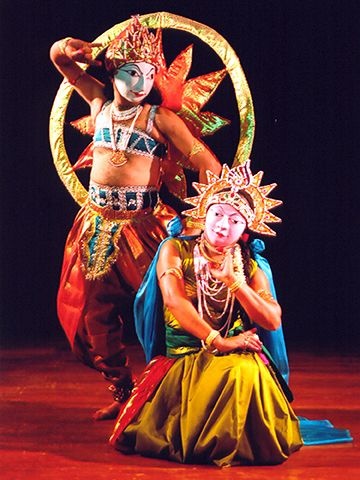
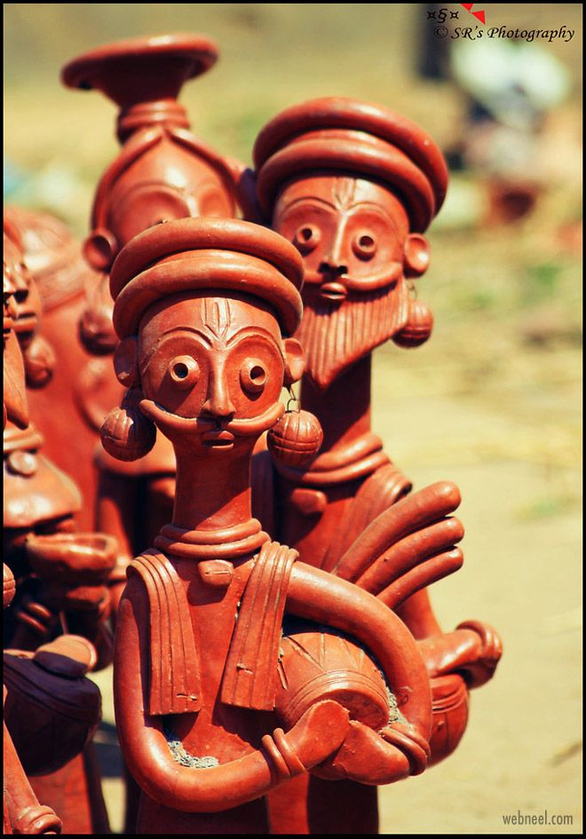

Kalighat Painting emerged in 19th-century Kolkata, West Bengal, around the Kalighat Kali Temple. Its history is rooted in pilgrims seeking souvenirs, evolving from religious themes to depict social commentary and everyday life. The beauty lies in bold, flowing brushstrokes, vibrant colors, and simplified yet expressive figures. Artists used natural dyes on cloth or paper, capturing the essence of characters and scenes with striking immediacy. Culturally significant, Kalighat painting provided an accessible visual narrative for the masses, reflecting societal changes. It's an early example of modern art in India, bridging traditional folk art with an emerging urban sensibility.

Kantha Embroidery
Kantha Embroidery, from West Bengal (and Bangladesh), has an ancient history, originating as a frugal art where rural women repurposed old saris and dhotis. This traditional quilting and embroidery technique transformed discarded fabric into functional and decorative items. The beauty of Kantha lies in its simple running stitch that creates intricate motifs of flora, fauna, mythological figures, and daily life scenes. The subtle texture and often asymmetrical designs reveal a unique charm and personal narrative. Culturally significant, Kantha embodies domestic artistry, resourcefulness, and storytelling, often made for family members, especially children, reflecting shared experiences and spiritual beliefs.

Chhau Dance
Chhau Dance, a semi-classical Indian dance with martial, tribal, and folk origins, is prevalent in West Bengal (Purulia Chhau). Its history traces back centuries, evolving from martial practices and incorporating elements of folk theatre and indigenous rituals. The beauty of Purulia Chhau lies in its powerful, athletic movements, vibrant masks representing mythological characters, and dramatic storytelling. Dancers perform energetic acrobatics and mock combat sequences to vigorous percussion music. Culturally significant, Chhau serves as a vibrant community ritual, particularly during the spring festival of Chaitra Parva, reflecting ancient warrior traditions and mythological narratives, recognized by UNESCO in 2010.

Terracotta Art
Terracotta Art in West Bengal boasts an extensive history, particularly flourishing from the Malla dynasty period (16th-17th centuries) in regions like Bishnupur. Temples adorned with intricate terracotta panels showcase its architectural and devotional significance. The beauty of Bengal's terracotta lies in its detailed craftsmanship, warm reddish-brown hues, and narrative richness. Artisans mold clay into tiles and sculptures depicting mythological scenes, epic battles, and daily life, often with remarkable expressive quality. Culturally significant, terracotta art is deeply embedded in Bengal's spiritual landscape and architectural identity, transforming humble clay into timeless narratives, and continues to be practiced by skilled artisans.